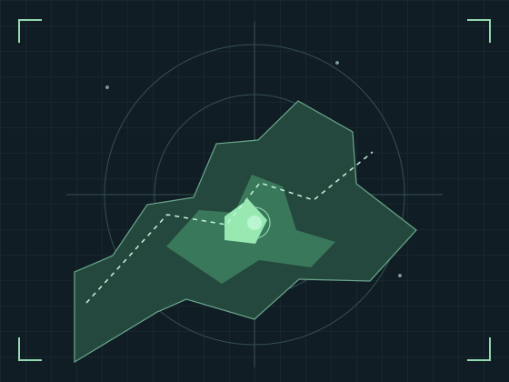

FOR RIDERS
我是一名骑手
看报价、选保障，追踪自己的保单与领取记录。
RAINPROOF / PARAMETRIC PROTECTION
为配送骑手而设计的降雨保障技术原型。
把一场雨变成可复算的判定，把每一个结果留成可核验的证据。
公开气象数据 / 确定性规则 / 链上证据
保险创业赛技术原型 · 测试网模拟演示
尚未开展真实保险业务，RDROP 不可兑换人民币。规则与风险

RAINFALL DISTRIBUTION / ILLUSTRATION○ 区域雨量与个人损失存在基差示意把复杂的技术留在背后，把清楚的规则交给你。
从投保基线到判定记录，保障过程支持独立复核。
选择配送区域与 12 或 24 小时窗口，查看链上报价。只计算投保后的新增降雨。
交叉比对气象模型，由确定性规则形成判定。分歧超限时拒收，并保留依据。
满足判定、时效及资金条件后，由交易触发领取。数据、判定与资金流向可核验。
额度基数 100 元，最高实际模拟给付 75 元。雨量达标仍需 PAY 判定、置信度达标、资金充足和外部交易。判定须及时提交，V6 允许在到期后 7 天内领取。
无需钱包。投保、授权和领取才需要测试网钱包、模拟资金及测试网 gas；授权与投保分别确认。
还需有效 PAY 判定、置信度门槛、领取时限与资金充足等条件。领取由外部交易触发，不能保证到账时间。
当前使用模拟单位 RDROP，不构成真实保险要约。落地还需持牌承保方、正式条款、支付渠道与稳定数据服务。三个模型通过同一聚合平台获取，模型一致也不能证明个人收入损失。
从体验一张保单开始，走过雨证的完整演示。